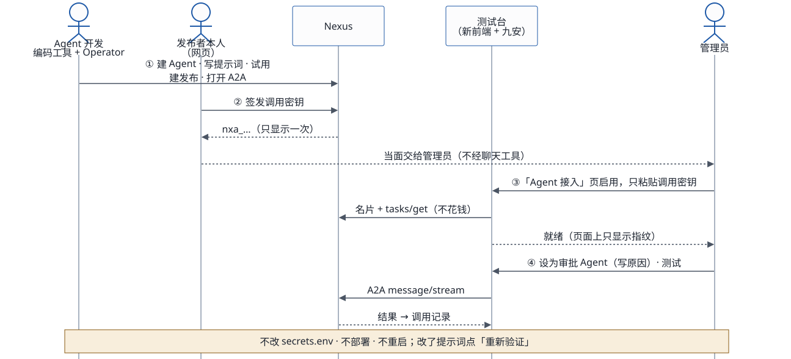

2026-10-17。写的是一个 Agent 从建好到在九安 PoC 前端可用的全过程。依据是这次接入「九安知识Agent（PoC）」实际走过的每一步。第 2 节已经按你定的交互方式改过：用户自己连接 Nexus、自己启用 Agent。设计见 Agent 注册与发现：设计，机制讲解见 HTML 报告。
1. 改版前的流程
第一期（2026-10-17）已经上线，第 5–8 步换成了第 2 节的「连接 → 启用」。这一节留作对照。
| # | 步骤 | 谁做 | 在哪里做 | 自动吗 | 这次用时 | 问题 |
|---|---|---|---|---|---|---|
| 1 | 建 Agent：复制「通用助手」，写提示词，清空工具 | 开发者，用 Claude Code + Operator | Nexus API | 自动 | 1–2 分钟 | — |
| 2 | 在平台内试用 | Operator
POST / |
Nexus API | 自动 | 每次约 20 秒 | 走的是 REST，不是 A2A，和应用实际的调用路径不一样 |
| 3 | 建发布，打开 A2A 和 MCP | Operator POST / |
Nexus API | 自动 | 几秒 | — |
| 4 | 签发调用密钥 | 开发者本人 | Nexus 网页「互联中心 › 对外发布」 | 手动 | 约半分钟 | 平台只认网页登录的本人（access_） |
| 5 | 把密钥交给应用 | 开发者交给运维 | 对话或聊天工具 | 手动 | — | 密钥在对话里出现过一次 |
| 6 | 写进 infra/ |
运维 | 本机 | 手动 | — | 文件只在一台电脑上；写错了要到第一次调用才知道 |
| 7 | deploy. |
运维 | 本机 | 半自动 | 约 3 分钟 | 每加一把密钥都要重启服务，内存里的审批记录和登录状态会清空 |
| 8 | 应用发现这个 Agent | PoC 服务端 | 启动时，或有人点「刷新」 | 半自动 | — | 列表靠 REST 加 admin 的 API 密钥；没有定时刷新 |
| 9 | 加载并测试 | 测试者 | 「Nexus Agent」页 | 半自动 | — | 能力清单要手动点「读取」，刷新页面后就没了 |
| 10 | 接入功能，比如审批流 | 运维 | 栈参数 AdvisoryPublicationId，再部署一次 |
手动 | — | 换 Agent 就要重新部署 |
手动和半自动的步骤加起来有 6 步（4–7、9、10），其中 3 步要碰到密钥（4–6）。
2. 按用户连接与启用之后（设计 v3，不需要改 Nexus）

用「Nexus Agent」页的人就是 Agent 开发者自己。他用自己的 Nexus 身份连接，看到自己的发布，自己决定启用哪些。
| # | 步骤 | 谁做 | 变化 |
|---|---|---|---|
| 1–3 | 建 Agent、试用、建发布 | 开发者 + Operator | 不变。试用改用 try-，和应用一样走
A2A |
| 4 | 签发调用密钥 | 开发者本人，在 Nexus 网页上 | 不变，平台限制 |
| 5 | 连接 Nexus（只做一次） | 开发者 | 在页面上填入自己的 API 密钥。应用读出他的发布列表：本人的，加上分享给他的。之后打开页面时会自动刷新 |
| 6 | 启用 | 开发者 | 在列表里点「启用」，填入调用密钥。应用当场验证：名片能读，tasks/
证明密钥有效（不花钱）。然后加密保存，读好能力清单 |
| — | 写文件、部署、重启 | — | 去掉 |
| 7 | 使用与迭代 | 开发者 | 启用后立即可以调用测试。在 Nexus 上改了 Agent，刷新后就是新版本；新发布的 Agent，刷新后出现在列表里，等着启用 |
| 8 | 接入审批流 | 运维 | 这一期不变：仍是系统配置，在调用测试里显示成「系统提供」 |
还要手动做的只剩三件：签发密钥（在网页上）、连接（一次）、启用（每个 Agent 一次）。都不用改文件、不用部署。
3. Nexus 补齐之后
| 要补的 | 补上以后 |
|---|---|
| API 密钥能签发调用密钥，或者能换取短期调用令牌 | Skills 一次做完「构建 → 发布 → 签发 → 启用」，开发者不用再在网页上签密钥、在页面上填密钥 |
| 附件上限按新部署模板放开 | 附件合计可以从 6 MB 放到 40 MB |
详见设计文档第 11 节。
以后的主入口是编码工具：Agent 的创建、更新和启用，主要在 Claude Code、Codex 或 Kiro CLI 里用自然语言完成。
- Nexus 侧用 nexus-ai-operator；
- 应用侧用新的 Skill
agent-access，它调用应用的接口约定 v1。见设计文档第 12、13 节，以及 Skills 设计。
页面只用来查看和兜底。这一期先把接口定好，并提供命令行
skills/agent-access/scripts/agent_access.py，编码工具现在就能直接调用。
4. 对照四步使用逻辑
| 使用逻辑 | 现在 | 按用户连接与启用 | Nexus 补齐之后 |
|---|---|---|---|
| 1 Operator 构建、发布、拿 Token | 构建和发布是自动的；Token 要手动签发、手动交接 | Token 还是在网页上签，但由开发者自己在页面上启用，不经过别人 | Skills 全自动 |
| 2 前端经 A2A 或 MCP 自动发现，加载测试 | 列表是管理员的，走 REST；名片和能力清单要先有密钥才读 | 列表按自己的 Nexus 身份读出；启用后名片和能力清单都已读好 | 同左，启用也自动 |
| 3 vibe coding 优化调用、做界面 | 可以复用
poc-、try-
和调用测试面板 |
同左；按任务的表单按能力清单生成 | 同左 |
| 4 测试、上线 | 单元测试和端到端测试齐全；每加一个 Agent 都要重新部署 | 不用重新部署；连接和启用保存在实例上 | 同左 |
5. 谁负责什么
| 开发者（应用用户） | 运维 | 最终用户（只用审批流） | |
|---|---|---|---|
| 构建、发布、迭代 Agent | 负责 | ||
| 签发、换新调用密钥 | 负责（在网页上） | ||
| 连接 Nexus、启用或停用 Agent | 负责（在页面上） | ||
| 审批流用哪个 Agent | 负责（栈参数加 secrets.） |
||
启动配置（口令、REGISTRY_） |
负责 | ||
| 使用 | 自己启用的 Agent，以及系统提供的 Agent | 审批流 |